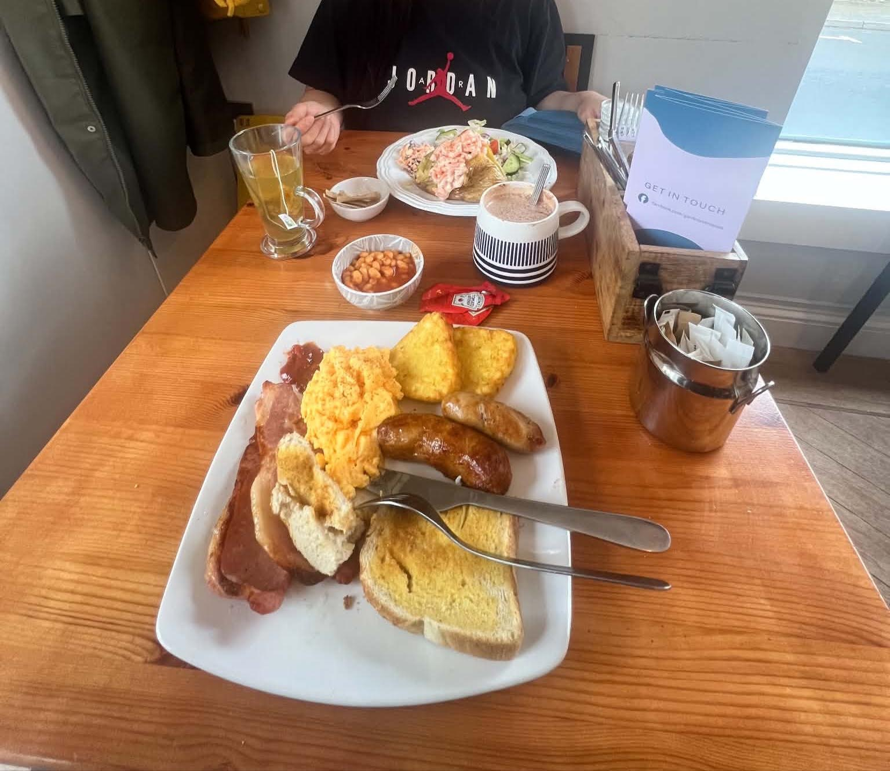
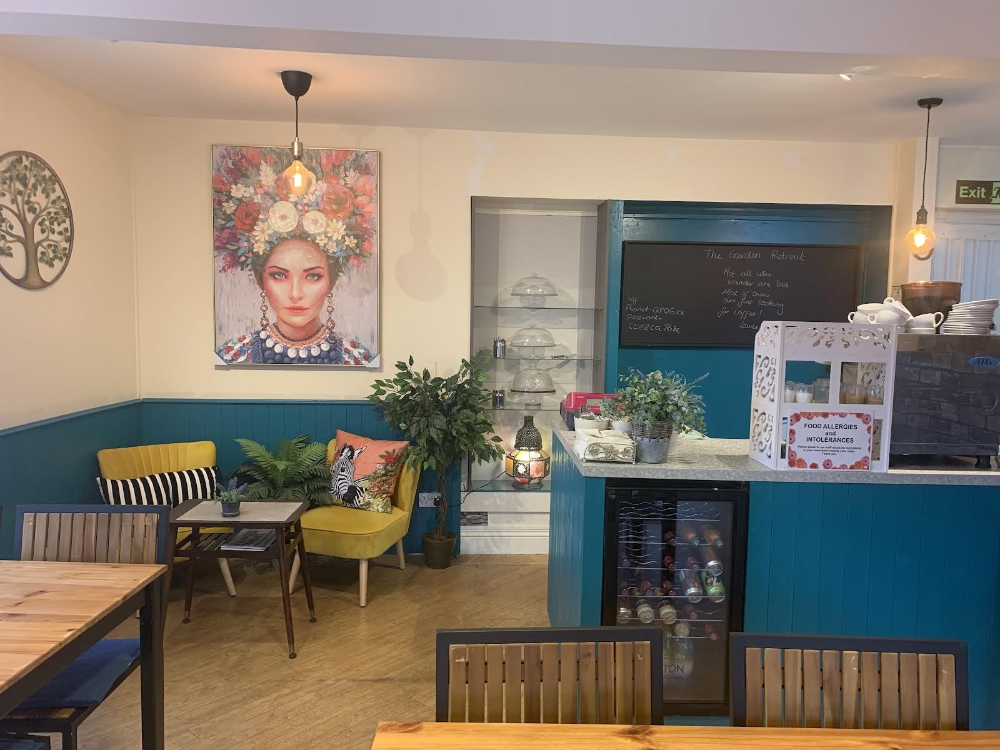

Wed–Sat · 9 am–2 pm
A small family café tucked just off St Marychurch high street. Big breakfasts, jacket potatoes, teacakes and coffee, Wednesday to Saturday, 9 till 2.
What people write home about
They start with the people, then the sausages.
- 43 friendly staff
- 6 warm friendly welcome
- 4 sausages
- 3 coronation chicken
- 3 milkshakes
- 2 teacakes
Postcards from St Marychurch
-
Greetings fromSt Marychurch
Laura went for a milkshake and teacakes, while I tackled the all-day breakfast with a latte. Everything was top-notch, but honestly, the sausages were un-banger-lievable! … We’ll definitely be making a retreat back here whenever we’re in St Marychurch!
-
Greetings fromoff the high street
Tucked away off the high street is this lovely gem of a place. A warm friendly welcome is ensured along with a great range of food. The breakfast is fantastic and great value for money.
-
Greetings fromthe brunch table
The coffee, sausages and bacon were soooo good. Very welcoming for allergy sufferers - our daughter has a nut allergy and the ladies were so helpful and accommodating in making sure everything was safe for her to eat.
-
Greetings froma family business
Completely exceptional. Such a warm welcome, and lovely food. Really reasonable prices alongside really thoughtful service, and a convivial, communal atmosphere. Exactly the kind of family business that deserves support
-
Greetings fromnext to the car park
My husband and I stumbled across this charming cafe when visiting the area … Cozy ambience, staff were welcoming, friendly and very courteous.
-
Greetings froma regular
We visited here with family a few times while on holiday … now i have located not to far away i travel most days here for breakfast and always receive a warm professional welcome
-
Greetings froma hidden gem
Fabulous hidden little gem. Friendly, welcoming staff, dog friendly. Generous portions, delicious food. Would definitely recommend and visit again

Inside the Retreat
“like coming home from home”
Nichola M., second visit
Teal panelling, mustard velvet armchairs, a flower-crowned portrait over the corner and cake domes by the counter. Bright, clean and friendly, in reviewers’ own words. The café also trades as the Garden Retreat, which is what the chalkboard says.
Not all who wander are lost. Most of them are just looking for coffee.
Chalked on the board behind the counterGood to know
Everybody Welcome including quiet dogs with paws on the floor
The café’s own house rule, from its Facebook page
- DogsWelcome inside. Reviewers call it dog friendly, and the house rule is above.
- Step-freeA wheelchair-accessible entrance.
- AllergiesSpeak to the team about ingredients when you order, as the sign on the counter asks.
- ParkingA car park opposite, and free on-street parking when there is a space.
Hours & directions
Off the high street, on Foxlands Walk.
Wednesday to Saturday
Open 9 am–2 pm, four days a week.
| Monday | Closed |
|---|---|
| Tuesday | Closed |
| Wednesday | 9 am–2 pm |
| Thursday | 9 am–2 pm |
| Friday | 9 am–2 pm |
| Saturday | 9 am–2 pm |
| Sunday | Closed |
Ring the café
Bringing a group, a dog or an allergy? Give us a ring.
07523 123743Calls and texts go straight to the café. Open Wednesday to Saturday, 9 am–2 pm.